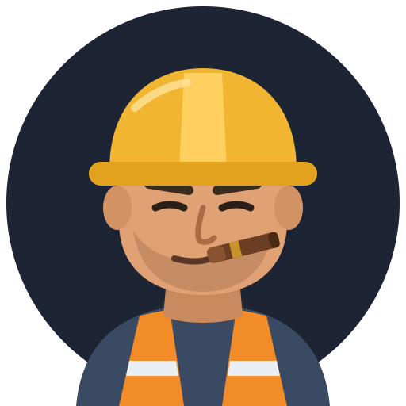

Nothing to dig here.
This page isn't on the job. The crew is back at the main site.
Back to grunt.runERROR 404 · SITE CLOSED TO TRAFFIC

This page isn't on the job. The crew is back at the main site.
Back to grunt.runERROR 404 · SITE CLOSED TO TRAFFIC